Candidate List 20260423 Previous Day Next Day Section 1: New Sources (age<1d) Cosmological Afterglow
Section 2: Old (1-5d) sources observed last night placeholder
Section 1: New Afterglow/FBOT Cands Last Night (1)
1. ZTF26aatupre (Afterglow?) [Back to Top] [Share] [Trigger Swift] [Fritz ] [Lasair ]RA, Dec: 171.58007, -18.45133 11h26m19.22s, -18d-27m-4.78sGalactic (l, b): 276.24027, 39.96797 ext(g-r) = 0.036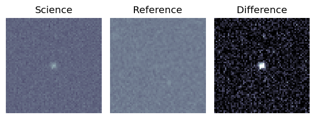
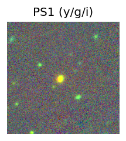
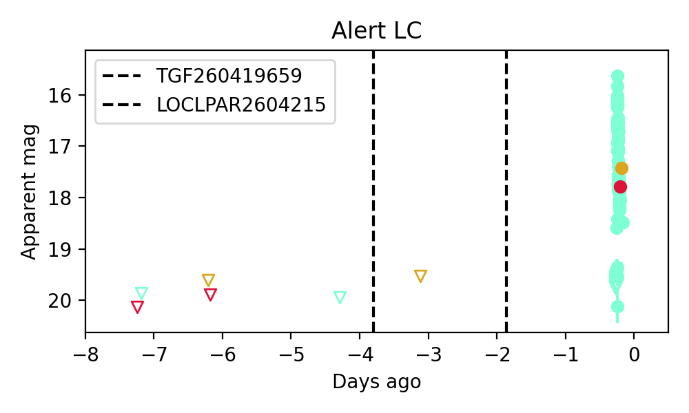
Consistent with synchrotron, g-r>0!
Section 2: Older Sources Observed Last Night (15)
0. ZTF26aasvjqa (FBOT?) [Back to Top] [Share] [Trigger Swift] [Fritz ] [Lasair ]RA, Dec: 185.17651, 23.64014 12h20m42.36s, 23d38m24.50sGalactic (l, b): 237.92493, 82.23411 ext(g-r) = 0.018peak abs mag = -20.54 LegacySurvey: 1 sources in 3 arcsec Closest: d = 2.13 arcsec, 264.4 deg (east of north) photoz=0.13 (68% bounds 0.1, 0.15), type=SER peak abs mag = -19.6 (68% bounds -19.05, -19.94)
1. ZTF26aaswggx (FBOT?) [Back to Top] [Share] [Trigger Swift] [Fritz ] [Lasair ]RA, Dec: 171.36776, 55.39877 11h25m28.26s, 55d23m55.58sGalactic (l, b): 145.86843, 57.73431 ext(g-r) = 0.014peak abs mag = -19.55 peak abs mag = -19.72 LegacySurvey: 1 sources in 3 arcsec Closest: d = 0.63 arcsec, 175.1 deg (east of north) photoz=0.16 (68% bounds 0.15, 0.16), type=SER peak abs mag = -19.75 (68% bounds -19.63, -19.85) Consistent with synchrotron, g-r>0!
2. ZTF26aaswrjn (Afterglow?FBOT?) [Back to Top] [Share] [Trigger Swift] [Fritz ] [Lasair ]RA, Dec: 192.52278, 4.26688 12h50m5.47s, 4d16m0.77sGalactic (l, b): 302.06773, 67.13637 ext(g-r) = 0.046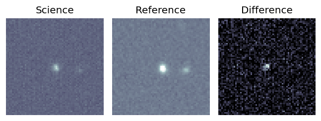
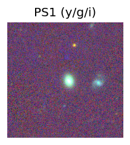
peak abs mag = -20.03 LegacySurvey: 1 sources in 3 arcsec Closest: d = 1.93 arcsec, 232.7 deg (east of north) photoz=0.13 (68% bounds 0.11, 0.16), type=SER peak abs mag = -19.57 (68% bounds -19.08, -20.08) 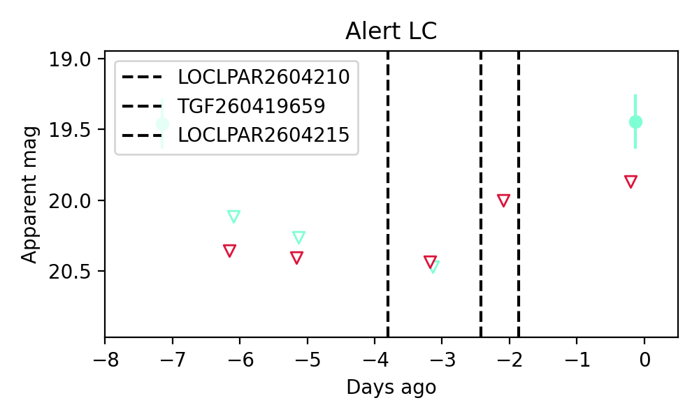
3. ZTF26aasxsos (FBOT?) [Back to Top] [Share] [Trigger Swift] [Fritz ] [Lasair ]RA, Dec: 187.54973, 18.68154 12h30m11.93s, 18d40m53.54sGalactic (l, b): 271.7818, 80.24292 ext(g-r) = 0.028peak abs mag = -20.78 LegacySurvey: 1 sources in 3 arcsec Closest: d = 1.94 arcsec, 185.4 deg (east of north) photoz=0.25 (68% bounds 0.19, 0.41), type=REX peak abs mag = -20.65 (68% bounds -19.89, -21.84)
4. ZTF26aatbvvn (Afterglow?) [Back to Top] [Share] [Trigger Swift] [Fritz ] [Lasair ]RA, Dec: 268.2875, 11.04177 17h53m9.00s, 11d 2m30.38sGalactic (l, b): 36.41723, 17.88481 ext(g-r) = 0.268
5. ZTF26aatdpkc (FBOT?) [Back to Top] [Share] [Trigger Swift] [Fritz ] [Lasair ]RA, Dec: 177.679, -13.38826 11h50m42.96s, -13d-23m-17.72sGalactic (l, b): 281.04734, 46.88701 ext(g-r) = 0.043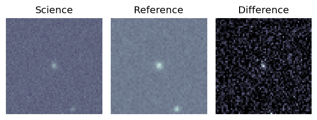
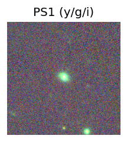
PS1: 1 source in 3 arcsec Closest: d = 0.32 arcsec photoz=0.12+/-0.02 peak abs mag = -20.06 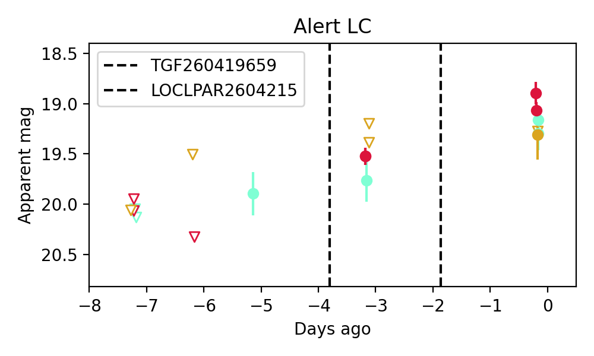
Consistent with synchrotron, g-r>0!
6. ZTF26aatlolu (FBOT?) [Back to Top] [Share] [Trigger Swift] [Fritz ] [Lasair ]RA, Dec: 210.2546, 5.44151 14h 1m1.10s, 5d26m29.43sGalactic (l, b): 343.40657, 62.71017 ext(g-r) = 0.031peak abs mag = -20.52 peak abs mag = -20.61 LegacySurvey: 1 sources in 3 arcsec Closest: d = 1.35 arcsec, 154.5 deg (east of north) photoz=0.06 (68% bounds 0.04, 0.18), type=SER peak abs mag = -18.19 (68% bounds -16.93, -20.61)
7. ZTF26aatloyt (Afterglow?) [Back to Top] [Share] [Trigger Swift] [Fritz ] [Lasair ]RA, Dec: 212.81829, -3.52066 14h11m16.39s, -3d-31m-14.37sGalactic (l, b): 338.16174, 53.79937 ext(g-r) = 0.067LegacySurvey: 1 sources in 3 arcsec Closest: d = 1.23 arcsec, 269.8 deg (east of north) photoz=0.07 (68% bounds 0.06, 0.09), type=SER peak abs mag = -18.52 (68% bounds -18.06, -19.04)
8. ZTF26aatpmfa (FBOT?) [Back to Top] [Share] [Trigger Swift] [Fritz ] [Lasair ]RA, Dec: 216.71608, 60.40887 14h26m51.86s, 60d24m31.93sGalactic (l, b): 103.55857, 52.98176 ext(g-r) = 0.013peak abs mag = -24.69 LegacySurvey: 1 sources in 3 arcsec Closest: d = 0.23 arcsec, 351.1 deg (east of north) photoz=0.86 (68% bounds 0.53, 1.15), type=REX peak abs mag = -25.53 (68% bounds -24.26, -26.32)
9. ZTF26aattcrm (FBOT?) [Back to Top] [Share] [Trigger Swift] [Fritz ] [Lasair ]RA, Dec: 211.62989, 25.68781 14h 6m31.17s, 25d41m16.10sGalactic (l, b): 32.28319, 73.1424 ext(g-r) = 0.015peak abs mag = -19.51 LegacySurvey: 1 sources in 3 arcsec Closest: d = 1.01 arcsec, 65.1 deg (east of north) photoz=0.12 (68% bounds 0.09, 0.14), type=SER peak abs mag = -19.37 (68% bounds -18.53, -19.73)
10. ZTF26aatvzmp (FBOT?) [Back to Top] [Share] [Trigger Swift] [Fritz ] [Lasair ]RA, Dec: 175.55178, 55.3226 11h42m12.43s, 55d19m21.36sGalactic (l, b): 142.20006, 59.1399 ext(g-r) = 0.017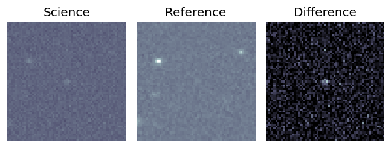
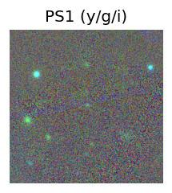
LegacySurvey: 1 sources in 3 arcsec Closest: d = 0.20 arcsec, 326.0 deg (east of north) photoz=0.71 (68% bounds 0.41, 0.85), type=REX peak abs mag = -23.17 (68% bounds -21.76, -23.65) 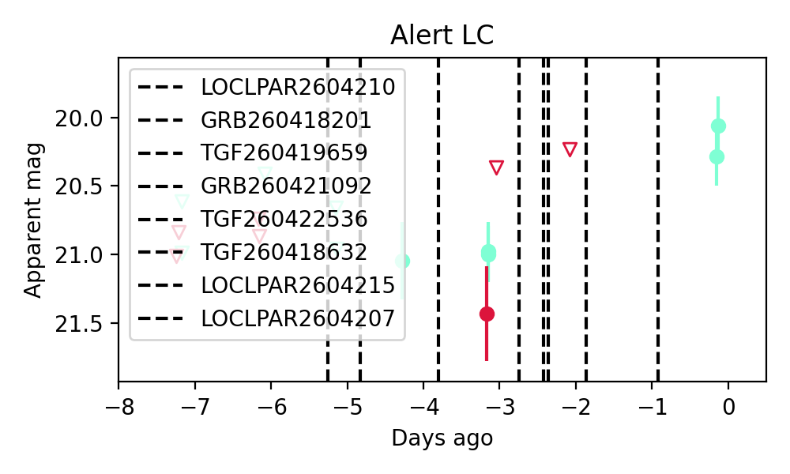
11. ZTF26aatwpem (FBOT?) [Back to Top] [Share] [Trigger Swift] [Fritz ] [Lasair ]RA, Dec: 188.98897, 69.73531 12h35m57.35s, 69d44m7.12sGalactic (l, b): 124.90886, 47.33347 ext(g-r) = 0.019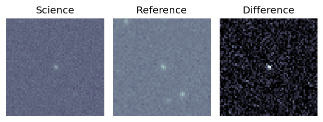
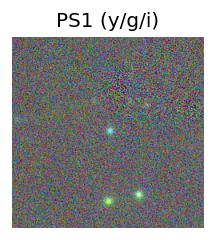
LegacySurvey: 1 sources in 3 arcsec Closest: d = 0.30 arcsec, 284.6 deg (east of north) photoz=0.3 (68% bounds 0.11, 1.57), type=REX peak abs mag = -20.94 (68% bounds -18.45, -25.26) 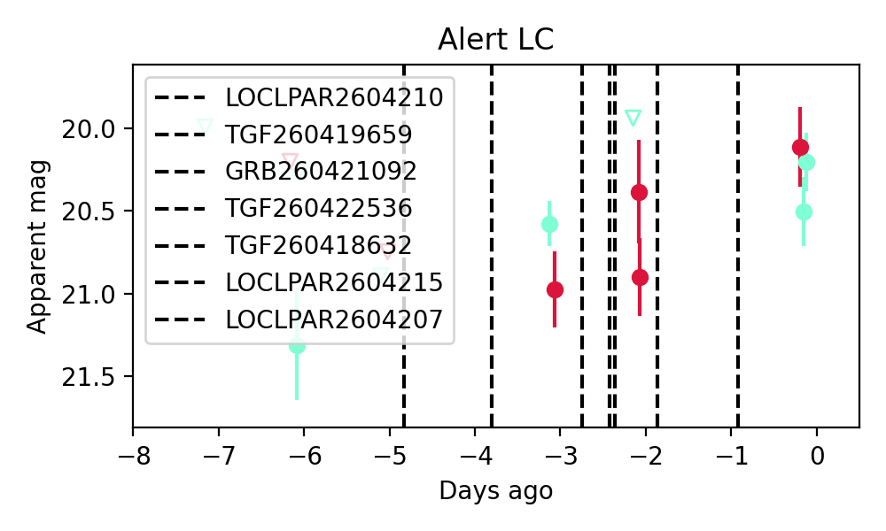
Consistent with synchrotron, g-r>0!
12. ZTF26aatyewn (Afterglow?) [Back to Top] [Share] [Trigger Swift] [Fritz ] [Lasair ]RA, Dec: 263.97271, -5.27321 17h35m53.45s, -5d-16m-23.54sGalactic (l, b): 19.2837, 14.17957 ext(g-r) = 1.028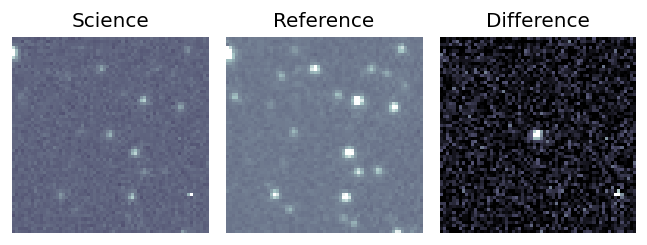
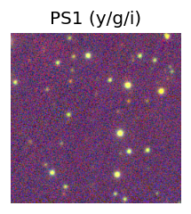
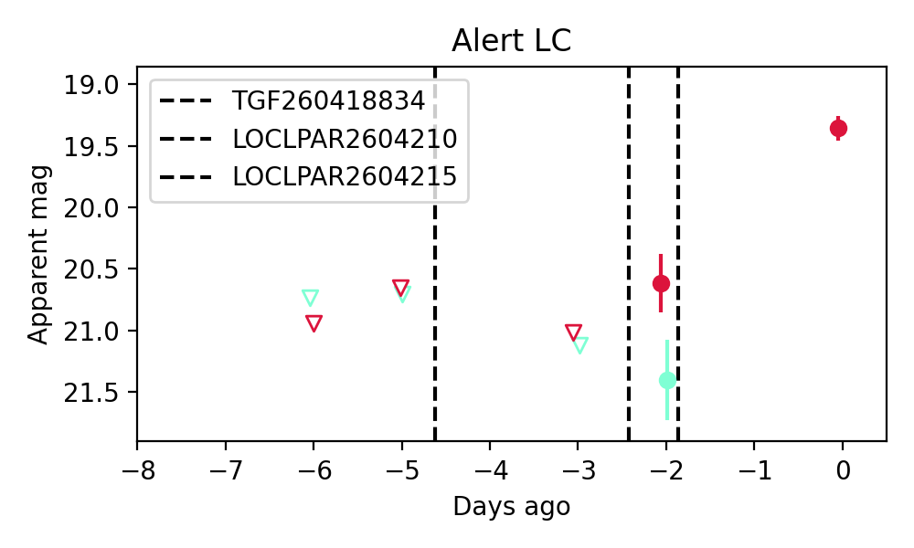
Consistent with synchrotron, g-r>0!
13. ZTF26aatyhtp (FBOT?) [Back to Top] [Share] [Trigger Swift] [Fritz ] [Lasair ]RA, Dec: 260.46488, 31.10619 17h21m51.57s, 31d 6m22.29sGalactic (l, b): 54.38264, 31.72811 ext(g-r) = 0.034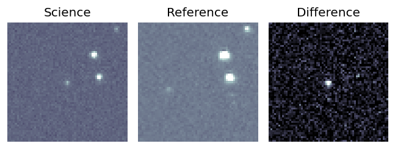
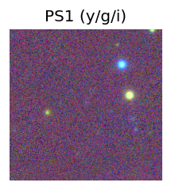
LegacySurvey: 1 sources in 3 arcsec Closest: d = 0.23 arcsec, 13.5 deg (east of north) photoz=1.12 (68% bounds 0.33, 1.71), type=REX peak abs mag = -24.76 (68% bounds -21.59, -25.89) 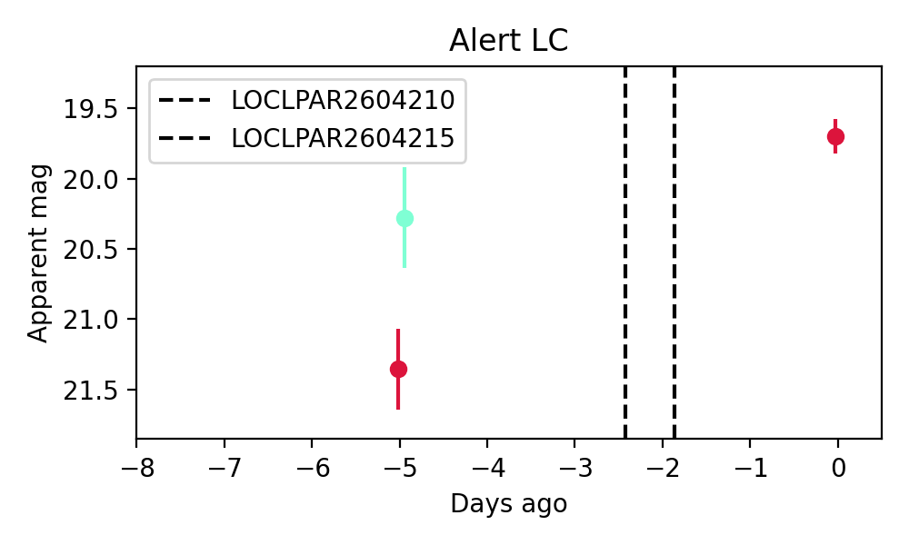
14. ZTF26aatyhvw (FBOT?) [Back to Top] [Share] [Trigger Swift] [Fritz ] [Lasair ]RA, Dec: 260.80897, 35.99874 17h23m14.15s, 35d59m55.47sGalactic (l, b): 60.0859, 32.56987 ext(g-r) = 0.045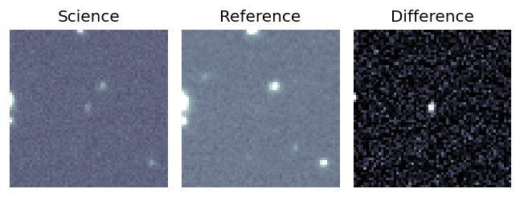
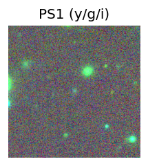
peak abs mag = -22.77 LegacySurvey: 1 sources in 3 arcsec Closest: d = 0.25 arcsec, 170.9 deg (east of north) photoz=0.14 (68% bounds 0.07, 0.48), type=REX peak abs mag = -19.29 (68% bounds -17.74, -22.34) 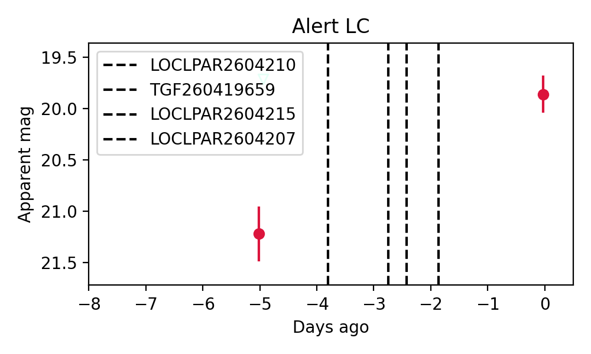